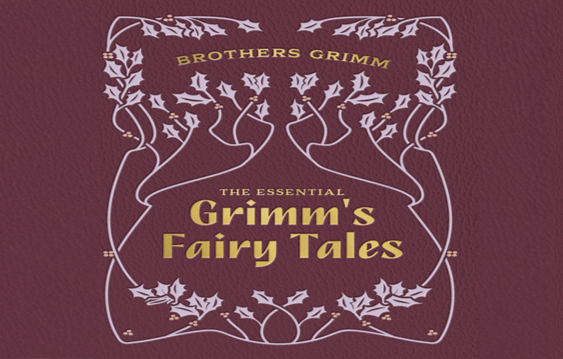

The Grimm Brother's Short Stories

Brother and Sister
Once upon a time, the little brother took his little sister by the hand and said, since our mother died we have had no happiness. Our step–mother beats us every day, and if we come near her she kicks us away with her foot. Our meals are the hard crusts of bread that are left over. And the little dog under the table is better off, for she often throws it a choice morsel. God pity us, if our mother only knew. Come, we will go forth together into the wide world. They walked the whole day over meadows, fields, and stony places. And when it rained the little sister said, heaven and our hearts are weeping together. In the evening they came to a large forest, and they were so weary with sorrow and hunger and the long walk, that they lay down in a hollow tree and fell asleep. The next day when they awoke, the sun was already high in the sky, and shone down hot into the tree. Then the brother said, sister, I am thirsty. If I knew of a little brook I would go and just take a drink. I think I hear one running. The brother got up and took the little sister by the hand, and they set off to find the brook. But the wicked step-mother was a witch, and had seen how the two children had gone away, and had crept after them secretly, as witches creep, and had bewitched all the brooks in the forest.
Rapunzel
There were once a man and a woman who had long in vain wished for a child. At length the woman hoped that God was about to grant her desire. These people had a little window at the back of their house from which a splendid garden could be seen, which was full of the most beautiful flowers and herbs. It was, however, surrounded by a high wall, and no one dared to go into it because it belonged to an enchantress, who had great power and was dreaded by all the world. One day the woman was standing by this window and looking down into the garden, when she saw a bed which was planted with the most beautiful rampion – rapunzel, and it looked so fresh and green that she longed for it, and had the greatest desire to eat some. This desire increased every day, and as she knew that she could not get any of it, she quite pined away, and began to look pale and miserable. Rapunzel grew into the most beautiful child under the sun. When she was twelve years old, the enchantress shut her into a tower, which lay in a forest, and had neither stairs nor door, but quite at the top was a little window. When the enchantress wanted to go in, she placed herself beneath it and cried, rapunzel, rapunzel, let down your hair to me. Rapunzel had magnificent long hair, fine as spun gold, and when she heard the voice of the enchantress she unfastened her braided tresses, wound them round one of the hooks of the window above, and then the hair fell twenty ells down, and the enchantress climbed up by it.
The White Snake
A long time ago there lived a king who was famed for his wisdom through all the land. Nothing was hidden from him, and it seemed as if news of the most secret things was brought to him through the air. But he had a strange custom, every day after dinner, when the table was cleared, and no one else was present, a trusty servant had to bring him one more dish. It was covered, however, and even the servant did not know what was in it, neither did anyone know, for the king never took off the cover to eat of it until he was quite alone. This had gone on for a long time, when one day the servant, who took away the dish, was overcome with such curiosity that he could not help carrying the dish into his room. When he had carefully locked the door, he lifted up the cover, and saw a white snake lying on the dish. But when he saw it he could not deny himself the pleasure of tasting it, so he cut off a little bit and put it into his mouth. No sooner had it touched his tongue than he heard a strange whispering of little voices outside his window. He went and listened, and then noticed that it was the sparrows who were chattering together, and telling one another of all kinds of things which they had seen in the fields and woods. Eating the snake had given him power of understanding the language of animals.
The Water of Life
There was once a king who had an illness, and no one believed that he would come out of it with his life. He had three sons who were much distressed about it, and went down into the palace-garden and wept. There they met an old man who inquired as to the cause of their grief. They told him that their father was so ill that he would most certainly die, for nothing seemed to cure him. Then the old man said, “I know of one more remedy, and that is the water of life. If he drinks of it he will become well again, but it is hard to find.” The eldest said, “I will manage to find it.” And went to the sick king, and begged to be allowed to go forth in search of the water of life, for that alone could save him. “No,” said the king, “the danger of it is too great. I would rather die.” Soon after this the prince entered a ravine, and the further he rode the closer the mountains drew together, and at last the road became so narrow that he could not advance a step further. It was impossible either to turn his horse or to dismount from the saddle, and he was shut in there as if in prison. The sick king waited long for him, but he came not.
Lean Lisa
Lean lisa was of a very different way of thinking from lazy harry and fat trina, who never let anything disturb their peace. She slaved away from morning till evening, and burdened her husband, long laurence, with so much work that he had heavier weights to carry than an ass with three sacks. But it was all to no purpose, for they had nothing and came to nothing. One night as she lay in bed, and could hardly move one limb for weariness, she still did not allow her thoughts to go to sleep. She thrust her elbow into her husband’s side, and said, listen, lenz, to what I have been thinking. If I were to find one florin and one was given to me, I would borrow another to put to them, and you too should give me another, and then as soon as I had got the four florins together, I would buy a young cow. This pleased the husband right well.